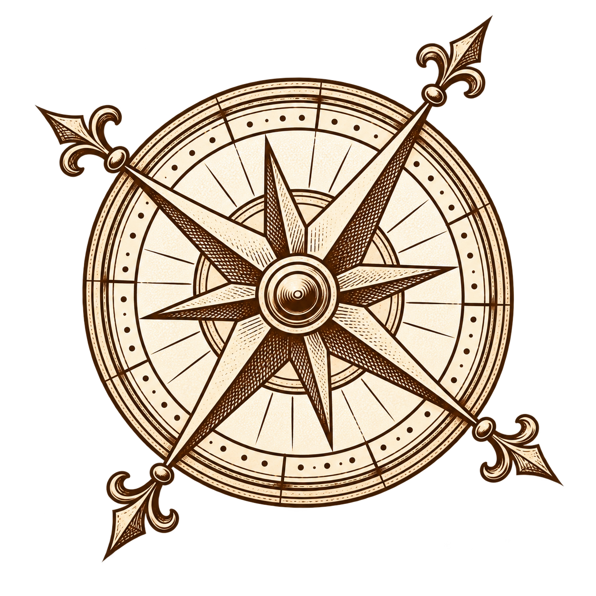
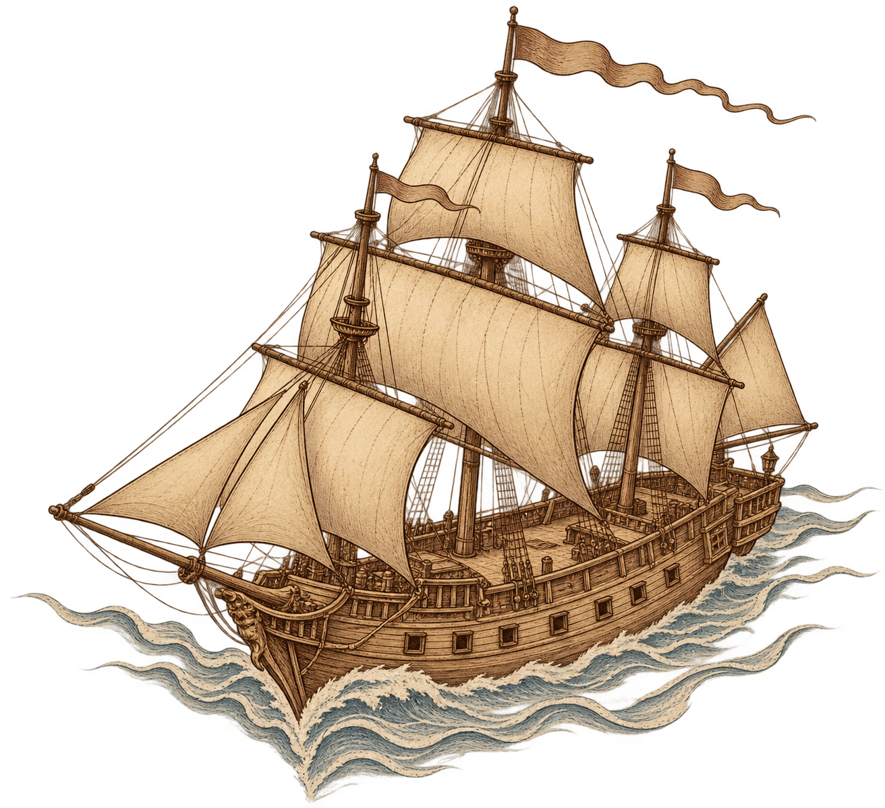
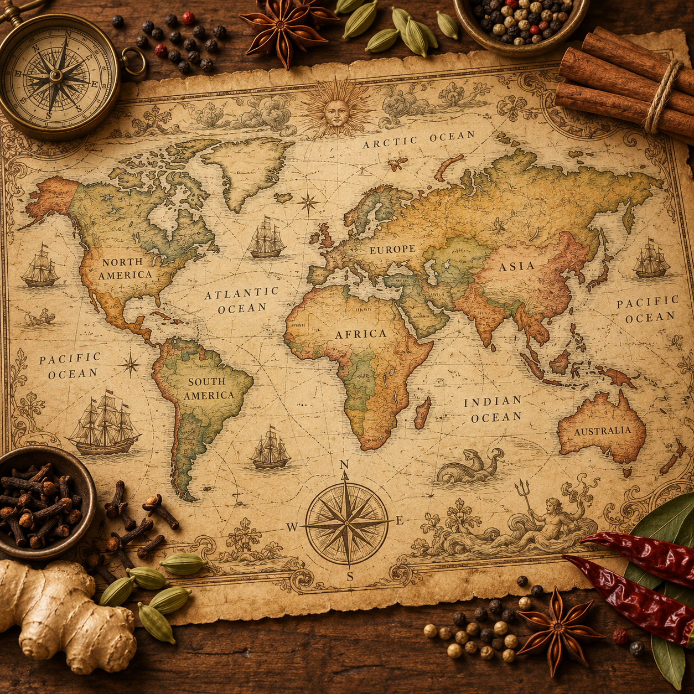

Cuisine
Explore · Taste · Discover
Culinaire reizen
over de hele wereld
Ontdek lokale smaken, ingrediënten en gerechten uit alle hoeken van de wereld. Laat je inspireren en breng de wereldkeuken naar jouw eigen tafel.



DE SMAKEN VAN DE WERELD
Elke regio vertelt een verhaal
Van eeuwenoude specerijenroutes tot gerechten die van generatie op generatie worden doorgegeven. Ontdek de culinaire tradities achter de wereldkaart.
Beweeg over de kaart om een regio te ontdekken. Klik voor bijbehorende gerechten.

Culinaire regio
Verken de culinaire wereld
Beweeg met de muis over een regio om meer te lezen over de keuken en haar karakteristieke ingrediënten.
Proef de wereld